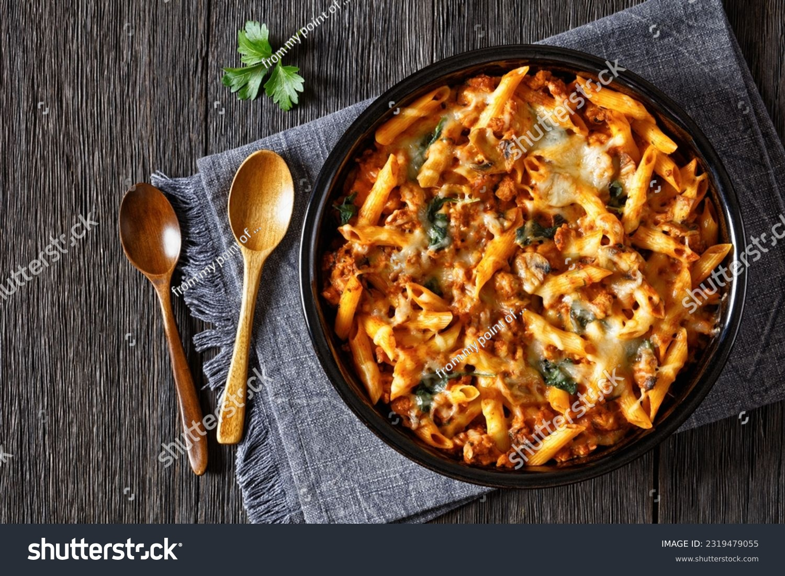

Marry Me Chicken Pasta

Description
Ingredients
- 2 boneless, skinless chicken breasts
- 8 oz pasta (penne or fettuccine works well)
- 2 tablespoons olive oil
- 3 cloves garlic, minced
- 1 cup heavy cream
- 1/2 cup chicken broth
- 1/2 cup grated Parmesan cheese
- 1 teaspoon red pepper flakes (optional)
- Salt and pepper to taste
- Fresh basil or parsley for garnish
Steps
- Cook the pasta according to package instructions until al dente. Drain and set aside.
- Season the chicken breasts with salt and pepper on both sides.
- In a large skillet, heat olive oil over medium-high heat. Add the chicken breasts and cook for 5-7 minutes on each side, or until fully cooked and golden brown. Remove from the skillet and let rest before slicing.
- In the same skillet, add minced garlic and sauté for about 1 minute until fragrant.
- Add the heavy cream and chicken broth to the skillet, stirring to combine. Bring to a simmer.
- Stir in the grated Parmesan cheese and red pepper flakes (if using). Continue to simmer until the sauce thickens slightly, about 3-5 minutes.
- Add the cooked pasta to the skillet, tossing to coat it evenly with the sauce.
- Slice the cooked chicken breasts and place them on top of the pasta. Garnish with fresh basil or parsley.
- Serve immediately and enjoy!
Back to home page